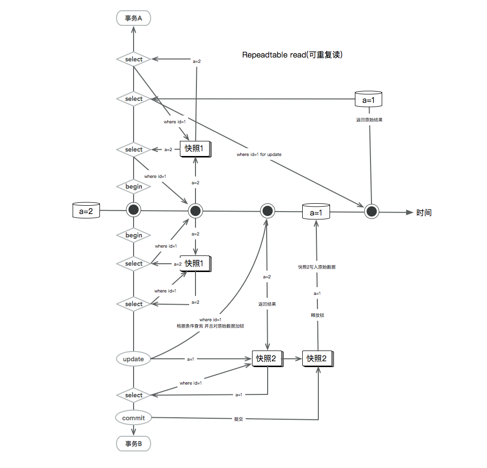
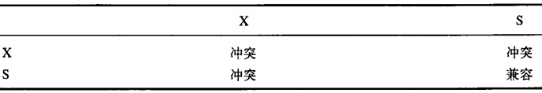

ACID，指数据库事务正确执行的四个基本要素的缩写。包含：原子性（Atomicity）、一致性（Consistency）、隔离性（Isolation）、持久性（Durability）
原子性(A)
指整个数据库事务是不可分割的工作单位。只有使事务中所有的数据库操作都执行成功，才算整个事务成功。事务中任何一个SQL语句执行失败，已经执行成功的SQL语句也必须撤销，数据库状态应该退回到执行事务前的状态。
一致性(C)
指事务将数据库从一种状态转变为下一种一致的状态。在事务开始之前和事务结束以后，数据库的完整性约束没有被破坏。
例如，在表中有一个字段为姓名，为唯一约束，即在表中姓名不能重复。如果一个事务对姓名字段进行了修改，但是在事务提交或事务操作发生回滚后，表中的姓名变得非唯一了，这就破坏了事务的一致性要求，即事务将数据库从一种状态变为了一种不一致的状态。因此，事务是一致性的单位，如果事务中某个动作失败了，系统可以自动撤销事务——返回初始化的状态。
也就是说 第一个事务 对 name=1 进行了 inster，第二事务也进行了inster 或者对其他数据的更新 name=1 那么在提交事务后 name就不是唯一了 ，所以一致性保证了 唯一 谁最后提交就失败 ，通过约束可以使数据库 一致性和完整性
隔离性(I)
事务的隔离性要求每个读写事务的对象对其他事务的操作对象能相互分离，即该事务提交前对其他事务都不可见，通常这使用锁来实现。
持久性(D)
事务一旦提交，其结果就是永久性的。即使发生宕机等故障，数据库也能将数据恢复。
autocommit
MySQL默认操作模式就是autocommit自动提交模式。这就表示除非显式地开始一个事务，否则每个查询都被当做一个单独的事务自动执行。我们可以通过设置autocommit的值改变是否是自动提交autocommit模式。
通过以下命令可以查看当前autocommit模式
mysql> show variables like 'autocommit';
+---------------+-------+
| Variable_name | Value |
+---------------+-------+
| autocommit | ON |
+---------------+-------+
1 row in set (0.04 sec)
从查询结果中，我们发现Value的值是ON，表示autocommit开启。我们可以通过以下SQL语句改变这个模式
临时
mysql> set autocommit = 0;
永久
在mysql.cnf 文件中 添加 autocommit=0 ,值0和OFF都是一样的，当然，1也就表示ON。通过以上设置autocommit=0，则用户将一直处于某个事务中，直到执行一条commit提交或rollback语句才会结束当前事务重新开始一个新的事务。
COMMIT WORK 也可以写为COMMIT， 不过这二者几乎是等价的，会提交事务， 并使得已对数据库做的所有修改成为永久性的。
ROLLBACK 也可以写为ROLLBACK WORK，但是二者几乎是等价的。回滚会结束用户的事务，并撤销正在进行的所有未提交的修改。
step 1 : savepoint savepoint_name;、 做标记
step 2 :rollbak to savepoint savepoint_name;回滚到标记点
setp 3 :release savepoint savepoint_name;解除标记
隔离级别
为了兼顾并发效率和异常控制，在标准SQL规范中，定义了4个事务隔离级别，（Oracle和SQLSERER对标准隔离级别有不同的实现 ）
Read Uncommitted
直译就是"读未提交",意思就是即使一个更新语句没有提交,但是别
的事务可以读到这个改变.这是很不安全的.
Read Committed
直译就是"读提交",意思就是语句提交以后即执行了COMMIT以后
别的事务就能读到这个改变.
Repeatable Read
直译就是"可以重复读",这是说在同一个事务里面先后执行同一个
查询语句的时候,得到的结果是一样的.
Serializable
直译就是"序列化",意思是说这个事务执行的时候不允许别的事务并发执行
-- 查询事物隔离级别
SELECT @@tx_isolation;
--设置当前session的事物隔离级别为read uncommitted
set session transaction isolation level read uncommitted;
redo和undo的作用都可以视为是一种恢复操作
redo恢复提交事务修改的页操作，而undo回滚行记录到某个特定版本。 因此两者记录的内容不同，redo通常是物理日志，记录的是页的物理修改操作。 undo是逻辑日志，根据每行记进行记录
原子性,一致性,持久性通过数据库的redo_log和undo_log来完成。 redo_log 称为重做日志，用来保证事务的原子性和持久性。
undo_log 用来保证事务的一致性
脏读
一个事务可以读到另外一个事务中未提交的数据， 则显然违反了数据库的隔离性。不可重复读 — 表示读以提交的事务
不可重复读是第一事务还未提交，而第二事务对数据添加或者更新并且提交事务，导致第一个事务再次查询出现不一样的结果，但是mysql 通过Next-Key Lock 避免了。可重复读 —针对的是快照读
在第一个事务A中对同一条记录查询结果都是一样的，即使在其他事务B中对这条数据进行update 操作并且提交，而在第一次事务A中再次查询看到的结果都是和前两次一样(前提事务A还未提及事务)
begin ;
select * from a1 where id = 1 ; — 结果name=1
——在其事务B中对这条数据进行了update name=2 且已经提了
select * from a1 where id = 1 ; --结果还是name=1
-— update 更新的是原始数据，不是快照 ，而select在隔离级别为可重复时读的是当前事务的快照
update a1 set name=name+’2’ where id = 1 ;
select * from a1 where id = 1 ; --结果还是name=’22'
commit ；
select * from a1 where id = 1 ; —结果变成了name=2
在select 走的快照读，而update Tex1 set arg = arg+100 where id = 2 ; 其中arg+100是当前读
update ,inster ,delete ,for update 或者显示加锁操作都是当前读，那么什么是快照读，什么是当前读？
- 快照读
- 数据库通过快照数据的方式，来隔离事务之间数据可见性问题，在第一次通过条件查询数据的时候数据库引擎会为这行记录快照一份当前的记录（原始记录），如果接下来其他事务对这行数据进行update 的时候修改操作时候数据库引擎同样会在创建一份快照并且对符合条件的原始记录加锁 事务ID指向当前事务ID，其他事务无法在进行加锁操作了 ，所以快照表示读当前事务下的快照记录
- select 都是快照读，切都是读当前事务下的快照记录 而for update ,lock都是读原始记录并且加锁
- 当前读
- 表示对原始记录 进行加锁操作的时候都是当前读，返回的都是原始记录，例如 事务隔离等级为可重复读
- 事务A 对这行数据查询得到的目列结果 1 ，而事务B对这条数据update 成2 或者delete 且事务提交，那么事务A
- select 快照读，读到的还是结果为1
- select * for update 读到的就2或者没有数据已经删除-也就是当前读
- 也会包含inster新插入的记录(会锁住自己的主键)即使当前事务未提交当前读都会被阻塞（符合当前加锁的记录的条件）
- inster(name = 1) 事务A 插入一条（主键加锁）未提交事务
- update set name = 2 where name = 1 事务B 进行更新（会被阻塞）
- 事务A 对这行数据查询得到的目列结果 1 ，而事务B对这条数据update 成2 或者delete 且事务提交，那么事务A
- 表示对原始记录 进行加锁操作的时候都是当前读，返回的都是原始记录，例如 事务隔离等级为可重复读

读未提交的级别 逻辑意义的丢失更新问题（数据库是不会允许 同时修改一条数据的）
- 事务 T1 查询 一行 数据， 放入 本地 内存， 并 显示 给 一个 终端 用户 User1。
- 事务 T2 也 查询 该 行 数据， 并将 取得 的 数据 显示 给 终端 用户 User2。
- User1 修改 这 行 记录， 更新 数据库 并提 交。
- User2 修改 这 行 记录， 更新 数据库 并提 交。
for update（ 不能使用lock in shard mode因为目的就是排除其他事务） 锁住要更新的对象 在进行其他计算或者更新
以及 预期值和当前值比较 失败了 查询查询更新
MySQL有三种锁的级别
- 页级
- 表级
- 行级
- 三种算法
- Gap Lock ：间隙锁，锁定一个范围但不包含纪录本身。
- Record Lock： 单个行纪录上的锁。
- Next-Key Lock：是由Gap 和Record 锁 合并而成。
- InnoDB对于行的查询都是采用这种锁定算法, 但是如果索引中包含唯一索引，InnoDB对Next-KeyLock锁升级，降级为Reord Lock 锁。
- Next-Key Lock 是为了解决幻像而设计的。
- 三种算法
1、共享锁（S Lock），允许事务读一行数据
2、排他锁（X Lock)，允许事务更新或者删除一行数据
共享锁和排他锁的兼容如下图所示

锁的触发
insert into 对外键表锁的触发 ---共享锁
（1）外键Id是主键索引
begin ;
-- idd 是外健 a1 的id
insert into `Tx`.`a2` ( `adder`, `idd`, `tel`) values ( '123', '1', '123');
重新开启一个事务
begin ;
— S 锁可以执行
select * from a1 where id = 1 LOCK IN SHARE MODE ;
— X 就需要等待a2 提交事务才可以
select * from a1 where id = 1 for update ;
— 如果是同一个事务中 是可以执行的，也就是说锁的可以重入的
因为在外键的插入 对于数据的隔离性要求较高，在插入前需要扫描父表中的记录是否存在，所以，在外键的插入上，InnoDB会使用加S锁的方式来实现 对于删除或者更新 不会对外健影响。
解决办法:
添加一张中间表 用于关联主表，这样可以减少对主表S锁
（2）显式对读进行加锁
如使用 select --- for update 或者 select --- lock in share mode
（3）insert into 检查主键冲突属于表S锁
插入操作会依据这个自增长的计数器值加1赋予自 增长 列。 这个 实现 方式 称做 AUTO- INC Locking。 这种 锁 其实 是 采用 一种 特殊 的 表 锁 机制， 为了 提高 插入 的 性能， 锁 不是 在 一个 事务 完成 后才 释放， 而是 在 完 成对 自 增长 值 插入 的 SQL 语句 后 立即 释放。
InnoDB锁的范围取决于索引类型
- Record Lock：单个行记录上的锁。 （update 唯一索引，主键索引）
- Gap Lock：间隙锁，锁定一个范围，但不包含记录本身（锁住的是数据之间位置,对唯一索引插入 insert into ）
事务A insert into A(mac)values(‘1') 唯一属性 未提交事务
事务B insert into A(mac)values(‘1') 执行时sql异常如：
mac_unique唯一索引名称 违法约束
事务A在执行insert into 过程中，会锁组它左右两边（索引是有序排列的）索引项，不包括自己（id主键生成就放开锁），事务B在执行同样的SQL需要建立在唯一索引上添加数据所以会被阻塞
Next-key Lock:Gap Lock+Record Lock，锁定一个范围，并且锁定记录本身 （一般索引）
InnoDB对于行的查询或者普通索引都是采用这种锁定算法, 但是如果索引中包含唯一索引，InnoDB对Next-KeyLock锁降级为Reord Lock锁。
Next-Key Lock 是为了解决幻像而设计的，索引列不是唯一索引且是当前读或者数据更新都会加间隙锁
select * for update 如事务级别是可重复读(id不是主键 name是) 并且不存在间隙锁 会怎么样：
- begin ;
- select * from T1 where id = 10 for update ; 返回的结果是2条
- 假如其他事务对T1 表做 inster id=10
- 那么在第二次 select for update 过程中就会变成了3条数据 这就出现了幻读了
update 更新时候加间隙锁防止inster 插入 就会出现幻读 加间隙锁
- begin
- update T1 set id = 10 where id = 10 ; 会更新两条数据
- 假如其他事务inster (id = 10) ;提交事务
- 那么就会出现问题 select * from T1 where id = 10 for update 变成3条了
inster 插入的时候加间隙锁防止接下来其他事务update的更新，如果不加就出现幻读情况
- begin
- Inster into (id = 10) 事务A中
- 事务B 执行update where id = 10 ;那么
索引分四类
索引的类型决定了当前读时锁的范围，包括insert into 时外键锁定共享锁（S）
- 无索引
- 当前读-表锁
- REPEATABLE-READ(可重复读)
- update Client set name = 'u1' where deviceName = 'X220-1'
- 若deviceName 列上没有索引SQL会走聚簇索引(id)全扫描进行过滤，全部加锁采用的是表锁，阻止inster, delete update ,for update,共享锁
- update Client set name = 'u1' where deviceName = 'X220-1' and mac = '80:e6:50:27:6f:54’ ;
- mac 是唯一索引SQL走的是 唯一索引 也就锁住一条
- update Client set name = 'u1' where deviceName = 'X220-1'
- REPEATABLE-READ(可重复读)
- 当前读-表锁
index(普通的索引,数据可以重复)
- update
- inster
- Delete
- for update / lock in shan mode
fulltext(全文索引，用来对大表的文本域(char，varchar，text)进行索引语法和普通索引一样)
unique(唯一索引,唯一索引,要求所有记录都唯一)
primary key (主键索引,也就是在唯一索引的基础上相应的列必须为主键)
外健索引
事务隔离机制的不同体现在事务之间数据可见的不同 而可见都是针对快照读，而锁（update，inster，for update）是保证了对数据读的执行顺序（先根据条件找到索引在对次加锁） ，而约束保证了 数据的完整性和一致性，回滚操作体现了原子性上（要不全部提交提交失败回归所有的更新）
死锁解决办法
死锁产生是一个锁的加锁等待另外一个锁的释放就会产生
- 等待其他事务释放锁
- 在事务A中更新或者显示的加锁了，但是事务未提交
- 在事务B中对这条数据进行更新或者加锁，那么就会出现了等待 直到事务A 提交或者回滚了 才执行
- 循环嵌套了对方的锁 例如同时执行完第1步接下来就发生死锁
- 事务A
- select * from A where id = 1 for update —1
- select * from B where id = 1 for update —2
- 事务B
- select * from B where id = 1 for update — 1
- select * from A where id = 1 for update — 2
- 事务A
- 等待其他事务释放锁
解决死锁的最简单的办法是超时等待在innodb中可以通过
- innodb lock wait_ timeout = 1设置发生死锁等待时间 回滚事务或者操作 单位是秒杀。
- innodb_rollback_on_timeout = 1| 0
- 1表示回滚整个事务
- 0表示回滚当前语句不回滚事务 继续执行下面的SQL语句
information_schema 数据库中
- SHOW ENGINE INNODB STATUS 引擎表相信
- INNODB_TRX 事务表，纪录待提交的事务信息。
- INNODB_ LOCK_WAITS 锁等待消息
- INNODB_ LOCK 锁消息
一致性的非锁定读（快照读）
是指InnoDB存储引擎通过行多版本控制（ multi versioning） 的方式来读取当前执行时间数据库中行的数据。 如果读取的行 正在执行DELETE 或 UPDATE 操作， 这时读取操作不会因此去等待行上锁的释放。而是读一个快照。
一致性锁定读（当前读）
InnoDB存储引擎的SELECT操作使用一致性非锁定读。 但是在某些情况下， 用户需要显式地对数据库读取操作进行加锁以保证 数据逻辑的一致性。 而这要求数据库支持加锁语句， 即使是对于SELECT的只读操作。
对于SELECT语句支持两种一致性的锁定读操作：
❑ SELECT… FOR UPDATE 排它锁
❑ SELECT… LOCK IN SHARE MODE 共享锁